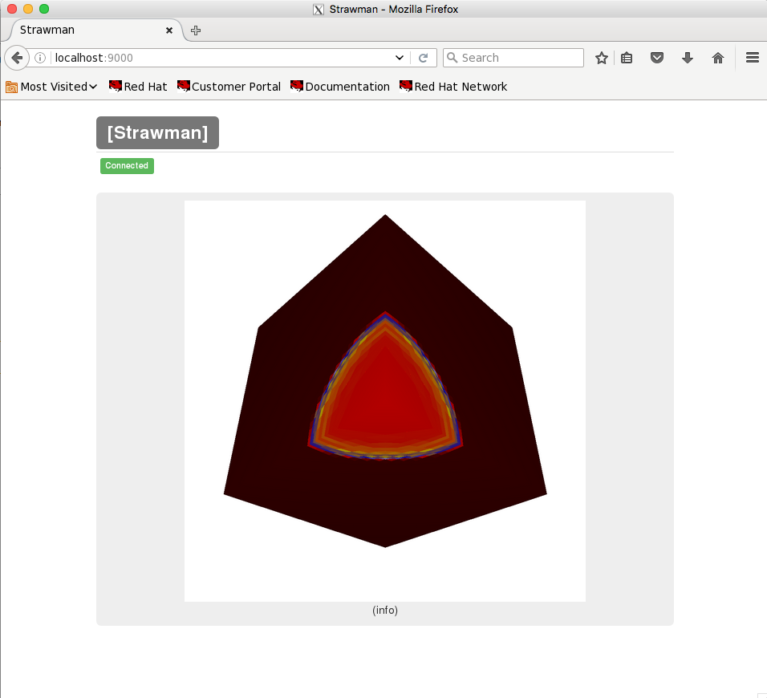

draw_plots¶
Draw plots simply renders the current plots. If a file name was specified in add_plots, then the rendered image will be saved to the file system. If a file name was not specified, then Strawman starts the embedded web server contained in Conduit.
Connecting To The Web Server¶
The web server automatically starts when no file name is present, and it can be connected to at any point during the simulation. The load the web server simply navigate to http://localhost:9000. Here is an example of the web view using Lulesh:
